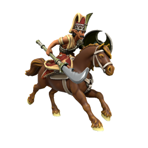
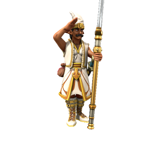

Military
Unlike other monarchies, the Kasharite military is not regional and all troops are loyal directly to the Sultan, not to regional governors. The army is commanded by Pashas, high ranking generals who each control a unit of mixed troops.
The troops themselves fall into four groups:
Piyad

Basic infantry unit, comprising the bulk of the Kasharite army. Primarily use a bladed spear called a fauchard, but carry a dagger for close combat.
Statblock (5e)
Piyad
Armor Class 10
Hit Points 26 (3d8 + 10)
Speed 30 ft.
Proficiency Bonus +2
| STR | CON | DEX | INT | WIS | CHR |
|---|---|---|---|---|---|
| +1 | +1 | +1 | +0 | +0 | +0 |
| 14 | 12 | 12 | 10 | 11 | 10 |
Fauchard Melee Weapon Attack: +3 to hit, reach 10 ft., one target. Hit: 1d8 piercing + 4 slashing damage.
Dagger. Melee Weapon Attack: +3 to hit, reach 5ft., one target. Hit: 1d4 + 2 piercing damage.
Hussar

Mounted cavalry unit, forms the front guard in military combat. Uses a reinforced fauchard from horseback, also carries a crescent shield. Excellent for hitting fast and hard right away, but their usefulness tapers off in long battles.
Statblock (5e)
Hussar
Armor Class 12
Hit Points 32 (5d8 + 10)
Speed 30 ft., 🐎 60ft.
Proficiency Bonus +2
| STR | CON | DEX | INT | WIS | CHR |
|---|---|---|---|---|---|
| +2 | +1 | +1 | +0 | +0 | +0 |
| 14 | 13 | 12 | 10 | 11 | 10 |
🐎 Trampling Charge. If the hussar moves at least 20 feet straight toward a creature and then hits it with an attack on the same turn, that target must succeed on a DC 14 Strength saving throw or be knocked prone. If the target is prone, the hussar can make another attack with their horses hooves against it as a bonus action.
🐎 Hooves. Melee Weapon Attack: +6 to hit, reach 5 ft., one target. Hit: 11 (2d6 + 4) bludgeoning damage.
Horde Breaker If the hussar made a weapon attack this turn, they can make another attack with the same weapon against a different creature within 5ft. of the original target.
Fauchard Melee Weapon Attack: +5 to hit, range 10ft., one target. Hit: 1d8 piercing + 4 slashing damage.
Shield Bash Melee Weapon Attack: +5 to hit, range 5ft., one target. Hit: 1d6 + 2 bludgeoning damage. Pushes target back 10ft.
Warhorse
Armor Class 11
Hit Points 19 (3d10 + 3)
Speed 60 ft.
| STR | CON | DEX | INT | WIS | CHR |
|---|---|---|---|---|---|
| +4 | +1 | +1 | -4 | +1 | -2 |
| 18 | 13 | 12 | 2 | 12 | 7 |
Hooves. Melee Weapon Attack: +6 to hit, reach 5 ft., one target. Hit: 2d6 + 4 bludgeoning damage.
Janissary

Elite fighers, the jewel of the Kashar military. These highly trained, disciplined veterans are feared and respected across the sub-Spessartine region. While their numbers are small, their high level of skill makes them a formidable force.
Statblock (5e)
Janissary
Armor Class 10
Hit Points 32 (5d8 + 10)
Speed 30 ft.
Proficiency Bonus +3
| STR | CON | DEX | INT | WIS | CHR |
|---|---|---|---|---|---|
| +2 | +1 | +0 | +0 | +0 | +0 |
| 14 | 13 | 11 | 10 | 11 | 10 |
Pack Tactics. The janissary has advantage on attack rolls against a creature if at least one of its allies is within 5 feet of the creature and the ally isn't incapacitated.
Multiattack. The janissary makes two Sword attacks or one sword attack and one unarmed.
Unarmed Strike Melee Attack: +5 to hit, range 5ft., one target. Hit: 1d6 bludgeoning damage. On critical success, knocks target prone.
Scimitar Sword. Melee Weapon Attack: +5 to hit, range 5ft., one target. Hit: 1d6 + 4 slashing damage.
Bostanji

Domestic palace guards. Not as formidable as the janissary unit, but extensively screened for loyalty.
Statblock (5e)
Bostanji
Armor Class 10
Hit Points 32 (5d8 + 10)
Speed 30 ft.
Proficiency Bonus +2
| STR | CON | DEX | INT | WIS | CHR |
|---|---|---|---|---|---|
| +1 | +1 | +1 | +0 | +0 | +0 |
| 14 | 12 | 12 | 10 | 11 | 10 |
Raise the Alarm! Bonus Action. If within the palace walls, raise an alarm. Each turn, roll a d6 for the following outcomes:
1-3 Nothing happens
4 Two bostanji appear
5 Three bostanji appear
6** One janissary appears
Fauchard Melee Weapon Attack: +3 to hit, range 10ft., one target. Hit: 1d8 piercing + 4 slashing damage.
Dagger. Melee Weapon Attack: +3 to hit, range 5ft., one target. Hit: 1d4 + 2 piercing damage.